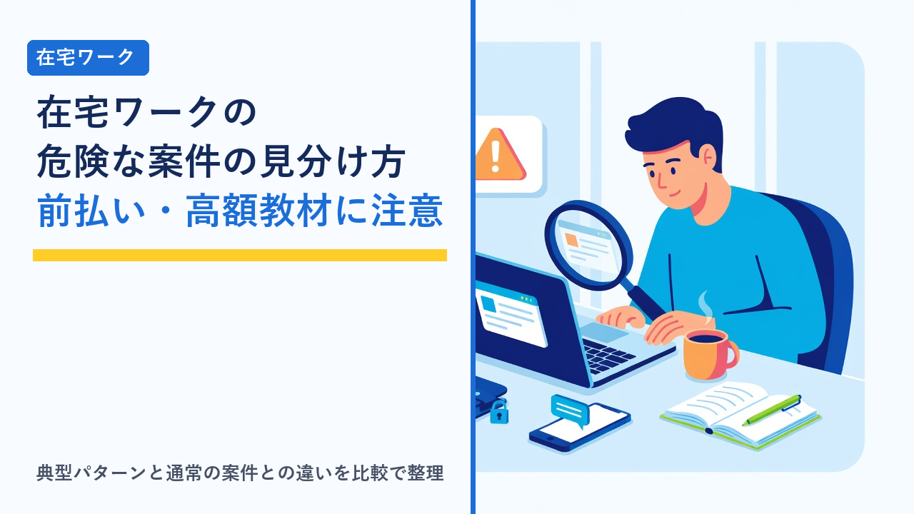

在宅ワークの危険な案件の見分け方：前払い要求・高額教材・情報商材の注意点
2026-10-08 更新

在宅ワークや副業の募集は、クラウドソーシングサイトだけでなく、SNS・動画サイトの広告・求人サイト・知人からの紹介など、さまざまな経路で目に入ってきます。その多くは通常の仕事の募集ですが、中には「仕事を始める前に、働く側がお金を払う」ことを前提にした案件が混ざっています。国民生活センターや消費生活センターにも、副業・在宅ワークをきっかけにした金銭トラブルの相談が継続して寄せられています。この記事では、注意が必要な案件によく見られるパターンを整理し、通常の案件との違い、確認の手順、万一支払ってしまった場合の相談先や制度を客観的にまとめます。
基本の考え方：「働く側が先に払う」案件は原則として疑う
在宅ワークに限らず、仕事とは「作業や成果を提供して、その対価を受け取る」ものです。したがって、報酬を受け取るより前に、働く側が登録料・保証金・教材費・ツール代などを支払う必要がある案件は、通常の仕事の構造とは逆になっています。もちろん、業務に必要なパソコンや通信環境を自分で用意することは一般的ですが、それは「発注者から特定の商品を買う」こととは別です。
「最初に払う必要がある」という点が出てきた時点で、いったん立ち止まり、なぜ支払いが必要なのか、支払わなければ仕事ができないのか、支払った金額を回収できる見込みが現実的なのかを確認することが、トラブルを避ける最初のポイントです。
注意したい案件の典型パターン
消費生活センターなどへの相談事例や、各クラウドソーシングサイトが禁止している行為をもとに、典型的なパターンを4つに分けて整理します。
1. 前払い要求（登録料・保証金・審査料）
「仕事を紹介するための登録料」「納品物の保証金」「審査に必要な手数料」などの名目で、仕事を始める前に支払いを求めるパターンです。「あとで報酬と一緒に返金される」と説明されることが多いものの、支払い後に連絡が取れなくなる、仕事が回ってこないといった相談が見られます。
2. 高額な教材・ツールの購入条件
「この仕事にはこの教材（ソフト・講座・マニュアル）が必須」として、数万円〜数十万円の購入を条件にするパターンです。購入後に「教材どおりにやれば稼げる」と言われるだけで、実際の仕事が提供されない、提供されても報酬が購入額に見合わないことがあります。
3. 情報商材・コンサルへの誘導
仕事の募集に見えるものの、実際は「稼ぐ方法を教える」有料のノウハウ販売やコンサルティング契約が目的のパターンです。無料セミナーや無料相談から始まり、個別面談で高額なコースの契約を迫られる流れが典型的です。「月収◯万円保証」「誰でも簡単」といった断定的な表現が使われがちです。
4. 報酬の受け取りに条件を付ける
仕事を一部こなした後で、「報酬を受け取るには手数料の振り込みが必要」「口座の認証のために一定額を入金してほしい」と求めるパターンです。働いた分の報酬を人質にとる形になるため、支払ってしまいやすい点が特徴です。
比較表：通常の案件と注意が必要な案件の違い
同じ「在宅ワークの募集」でも、通常の案件と注意が必要な案件には、確認できる違いがいくつかあります。1つ当てはまるだけで断定はできませんが、複数当てはまる場合は慎重に対応することが望まれます。
| 確認項目 | 通常の案件に多い特徴 | 注意が必要な案件に多い特徴 |
|---|---|---|
| お金の流れ | 作業・納品の後に発注者から報酬が支払われる | 仕事を始める前に働く側が登録料・保証金・教材費を払う |
| 仕事内容の説明 | 作業内容・納品物・納期・報酬額が具体的に書かれている | 「スマホだけで簡単」「コピペ作業」など内容が曖昧で、収入の話が中心 |
| 収入の表現 | 単価や報酬額が示され、作業量に応じて決まる | 「月◯万円保証」「誰でも必ず稼げる」といった断定的・保証的な表現 |
| 発注者の情報 | 事業者名・所在地・連絡先が確認でき、サイト上の実績や評価がある | 個人名やニックネームのみで、事業者情報が示されない、または検索しても実態が見えない |
| 連絡手段 | クラウドソーシングサイト内のメッセージ機能や業務用のメール | 契約前にLINEなど外部の個人連絡先への移動を急がせる |
| 契約の進め方 | 条件を確認し、合意してから契約・仮払いの手順に進む | 「今日中に決めないと枠が埋まる」など即決を迫る |
| 必要な準備 | 一般的なパソコン・ネット回線・無料または安価な一般ツール | 発注者が指定する高額な教材・ソフト・講座の購入が条件 |
「初心者歓迎」「未経験OK」という表現自体は通常の案件でも広く使われているため、それだけで判断はできません。上記の表の「お金の流れ」と「発注者の情報」が特に重要な確認項目です。初心者向けの案件の種類と単価の目安はデータ入力・文字起こし・ライティング：初心者向け在宅案件の違いと向き不向きで整理しています。
見分けるための確認手順
気になる募集を見つけたとき、契約や支払いの前に確認しておきたい手順を整理します。
- 事業者情報を調べる：事業者名・所在地・代表者名・連絡先が示されているかを確認し、名称で検索して実在する事業者か、トラブルの情報がないかを見ます。法人であれば国税庁の法人番号公表サイトで登記上の名称・所在地を確認できます。
- 「何をして、いくらもらえるか」を文章で確認する：作業内容・納品物・納期・報酬額・支払い時期が具体的に書かれていない場合は、契約前に質問し、回答を記録に残します。
- 支払いが発生するかを明確に聞く：登録料・保証金・教材費・ツール代など、働く側の負担が一切ないかを確認します。「あとで返金される」と言われても、返金条件を書面で確認できない場合は慎重に対応します。
- サイト外への誘導に乗らない：クラウドソーシングサイトでは、契約前にサイト外で直接やり取りすることを規約で禁止しているのが一般的です。外部へ誘導された時点で、サイトの仮払いや運営の仲介といった保護を受けられなくなる可能性があります。
- 即決を迫られたら一度離れる：「今だけ」「今日中に」といった期限を付けて判断を急がせる場合は、時間を置いて第三者に相談してから判断します。
- 収入の「保証」を疑う：収入は作業量や成果で変わるものであり、特定の金額を「保証」できる仕事は通常ありません。保証を強調する募集は、仕事そのものではなく契約金や教材費が目的である可能性を考えます。
支払ってしまった場合の相談先と制度
すでに支払ってしまった場合でも、状況によっては契約の解除や返金を求められる制度があります。
- 消費者ホットライン（188）：全国共通の電話番号で、最寄りの消費生活センターや相談窓口につながります。副業・在宅ワークに関する契約トラブルの相談を受け付けており、対応の方向性について助言を受けられます。
- 特定商取引法の「業務提供誘引販売取引」：「仕事を提供するので収入が得られる」と誘って、その仕事に必要だとして商品や講座などを購入させる取引は、特定商取引法で業務提供誘引販売取引として規制されています。契約書面を受け取った日から20日間はクーリングオフ（無条件での契約解除）が可能とされています。該当するかどうかの判断は個別の事情によるため、消費生活センターへの相談が有効です。
- クレジットカード会社・決済会社：カード払いや決済サービスで支払った場合、状況によっては支払いの停止や取り消しを相談できることがあります。早めに連絡することが重要です。
- 警察相談専用電話（#9110）：詐欺の可能性がある場合や、脅迫的な取り立てを受けている場合は、警察の相談窓口に連絡します。
- 利用したクラウドソーシングサイトの運営：サイト上で起きたトラブルであれば、運営への報告・相談が可能です。規約違反の発注者は利用停止などの対応が取られることがあります。
やり取りの記録（メッセージの画面、契約書面、振込の明細、広告の内容など）は、相談や手続きの際に重要な資料になるため、削除せず保存しておくことが推奨されます。
クラウドソーシングの仮払い（エスクロー）とサイト内取引の意味
注意が必要な案件を避けるうえで、クラウドソーシングサイトの中で契約から支払いまでを完結させることには明確な利点があります。多くのサイトでは、発注者が契約時に報酬をサイト運営に預ける「仮払い（エスクロー）」の仕組みを採用しており、作業者は仮払いが完了したことを確認してから作業を始められます。納品・検収後に運営から報酬が支払われるため、「働いたのに払われない」「報酬を受け取るために手数料を払わされる」といったリスクを下げられます。
また、発注者の過去の取引件数や評価がサイト上で確認できる点、規約で前払い要求やサイト外誘導が禁止されている点も、個人で直接契約する場合に比べて安全側に働きます。手数料がかかる点はデメリットですが、初めての取引や相手の実態がわからない段階では、この仕組みを使うことが一般的な選択肢です。
登録から応募までの流れはクラウディアの始め方：登録から案件応募までの流れ、サービスごとの違いは在宅ワーク・クラウドソーシングサービス比較で整理しています。
エージェント型サービスという選択肢
一定のスキルや職務経験がある場合、エージェント型のサービスを使う方法もあります。エージェント型では、企業からの案件をサービス側が受け付けて登録者に紹介する形になるため、登録者が発注者を自分で見極める負担が小さくなります。契約条件の調整や請求もサービスを介して行われるのが一般的です。一方で、登録時に経歴やスキルの審査があり、未経験から始める用途には向きにくい点、紹介される案件が特定の職種に偏る点は押さえておく必要があります。クラウドソーシングとの違いはクラウドソーシングとエージェント型サービスの違い比較で整理しています。
選び方のポイント
- 「先に払う」案件は原則として避ける：登録料・保証金・教材費・ツール代など、報酬より前に働く側が支払う構造の案件は、通常の仕事とは逆になっていることを意識します。
- 発注者の実態が確認できるものを選ぶ：事業者名・所在地・連絡先が示され、サイト上の取引実績や評価が確認できる発注者を優先します。
- 仕事の中身が具体的なものを選ぶ：作業内容・納品物・納期・報酬額が明記されている募集を選び、収入の話ばかりで仕事の内容が見えないものは見送ります。
- 初めはサイト内で完結する取引にする：仮払いの仕組みと運営の仲介がある取引から始め、相手の信頼性を確認できるまでは外部での直接契約は避けます。
- 即決を迫られたら時間を置く：期限を付けて判断を急がせる相手には、一度離れて第三者に相談してから返事をします。
- 必要な準備は自分で選んで用意する：パソコンや回線などの環境は自分で選び、発注者が指定する特定の高額商品の購入を条件にする案件には応じないのが安全です。作業環境の優先順位は在宅ワークの作業環境づくり：机・椅子・ネット回線で優先度が高いのはどれで整理しています。
よくある質問
有料の講座やツールを使う在宅ワークは、すべて避けるべきですか？
すべてを避ける必要はありません。たとえば、自分の判断で一般に販売されている講座を受けてスキルを身につけ、その後に仕事を探すことは通常の自己投資です。注意が必要なのは、「この仕事をするにはこの教材の購入が条件」と、仕事の提供と購入が結びつけられている場合です。この形は特定商取引法の業務提供誘引販売取引に当たる可能性があり、トラブルの相談も多い類型です。購入を勧める相手と仕事を提供する相手が同じで、購入しないと仕事がもらえないという構造になっていないかを確認します。
クラウドソーシングサイトの中なら、危険な案件は完全に排除されていますか？
完全ではありません。サイトの運営は規約で前払い要求やサイト外誘導を禁止し、違反を監視していますが、すべての募集を事前に審査しきれるわけではなく、規約違反の募集が一時的に掲載されることはあります。ただし、サイト内で仮払いを確認してから作業を始め、やり取りをサイト内に限定していれば、金銭的な被害を受ける可能性は大きく下がります。不審な募集を見つけた場合は、運営への報告機能を使うことが一般的です。契約・報酬に関する基本的な注意点は在宅ワークで注意したいこと（契約・報酬・確定申告の基礎知識まとめ）で整理しています。
知人やSNSで知り合った人から紹介された副業でも、同じように確認すべきですか？
紹介者との関係にかかわらず、確認する内容は同じです。紹介者自身が仕組みをよく理解しないまま勧めているケースや、紹介者にも報酬が入る仕組みで勧誘しているケースがあり、「知っている人からの紹介だから安全」とは言えません。むしろ、関係性があるために断りにくく、内容を十分に確認しないまま契約してしまうことがトラブルの原因になります。お金の流れ・事業者の実態・仕事の具体性を確認し、少しでも不明点があれば契約前に消費生活センターなどへ相談することが望まれます。